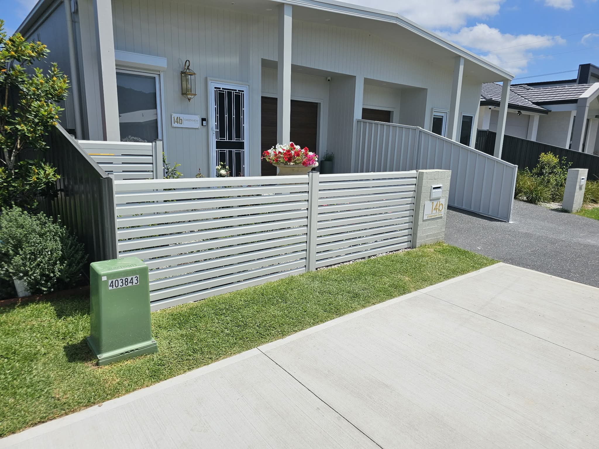

Colorbond® Steel Fencing
Australia’s most popular boundary fencing system for Illawarra homes.
COLORBOND® steel fencing is the go-to choice for homeowners across Wollongong, Shellharbour and Kiama who want privacy, durability and a clean finish that looks good from both sides.
Panels are manufactured from pre-painted BlueScope steel designed for Australian conditions — including coastal salt air common along the Illawarra. When installed correctly there are no vertical gaps, no loose palings and minimal footholds, which improves both privacy and security.
We supply and install a full range of panel styles and can match popular colour ranges so your fence coordinates with roofing, gutters or existing steelwork. Matching pedestrian and driveway gates complete the system for a seamless boundary.
Best for: residential side and rear boundaries, estate homes, privacy between neighbours, low-maintenance fencing.
Illawarra advantage: performs well in coastal exposure compared with untreated timber; quick to install on standard levels; long colour life with minimal upkeep.